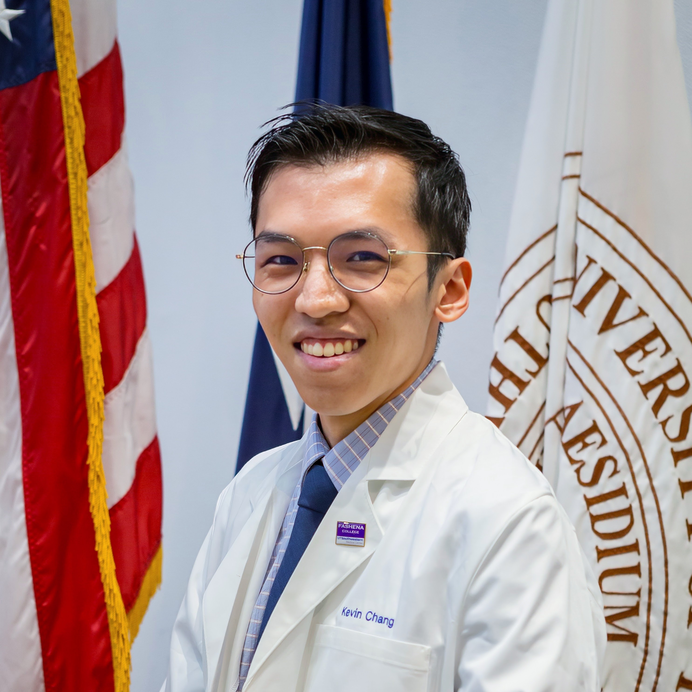

Hi, I'm Kevin!

I'm a third-year medical student at The University of Texas Southwestern Medical School,
currently most interested in specializing in diagnostic or interventional radiology.
I previously attended Rice University and graduated with a B.S. in Biosciences,
concentration in Cell Biology and Genetics.
I grew up in Southern California and Taiwan and am currently based in Dallas.
Life's pretty busy, but I'm always looking for time to try new things. Apart from what's on my website,
I also enjoy building desktop computers and playing racquet sports, cue sports, and video games.

My professional photography experience includes individual, couple, and group portraiture, as well as coverage for a variety of small- and large-scale events.
On the hobbyist side, I enjoy shooting in an equally wide range of genres.
See PHOTO for some of my favorite works from both worlds.
In other aspects of visual arts/media, I'm also involved in full-service videography (strongest in post-production, see VIDEO) and
graphic design (logos, merchandise, posters, see DESIGN).
Interested in a photoshoot?
Organizing a WCA competition?
Want to roast my front-end skills?
Just looking to chat?
Get in touch!